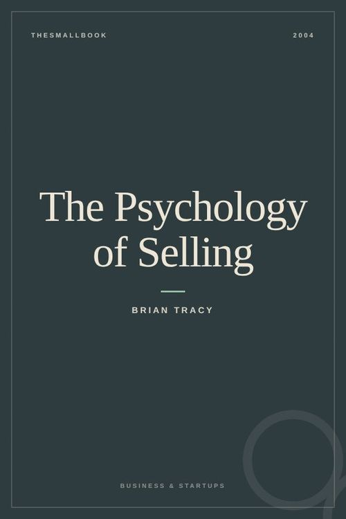
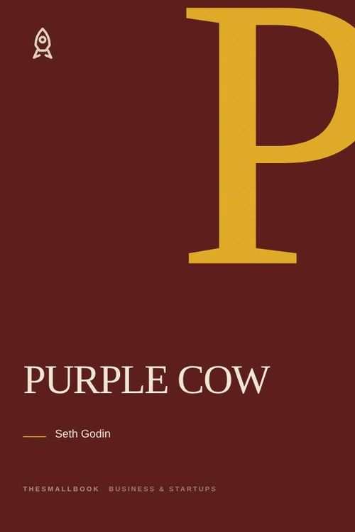

Library › Ask the Library › How do I sell anything better?
How do I sell anything better?
The short answer
People buy feelings and justify with logic. Sell the outcome, not the features, and always give value before asking for anything.
The books behind the answer

The Psychology of Selling
Brian Tracy · 2004 · 8 min · 6 lessons
Selling is 80% psychology: theirs (they buy feelings, then justify) and yours (self-concept sets your income). Master both, prospect relentlessly.
- Why People Really Buy: Emotion First, Logic as Alibi: Frame the feeling first: the transformation, the status, the relief. Price comes after desire.
$100M Offers
Alex Hormozi · 2021 · 8 min · 6 lessons
Don't compete on price. Build an offer so valuable and so de-risked that comparison becomes impossible.
- The Value Equation: Value = dream outcome × likelihood ÷ (time delay × effort). Stack the offer until the value is obvious.

Influence: The Psychology of Persuasion
Robert B. Cialdini · 1984 · 9 min · 7 lessons
Persuasion runs on fixed psychological triggers: reciprocity, commitment, social proof, liking, authority, scarcity, unity. Know them or be played by them.
- Reciprocity: The Debt You Didn't Ask For: People buy from people they like. Find genuine common ground before you ever pitch.

Purple Cow
Seth Godin · 2003 · 8 min · 6 lessons
Nobody talks about brown cows. In a world drowning in options and starved of attention, remarkable isn't a bonus - it's the entire marketing plan.
- Very Good Is Invisible: If it's not remarkable, it's invisible. Make the product worth talking about.
A failure that proves it
Why did Quibi fail?
2020 · EGO · Loss: $1.75B in 6 months
Quibi spent $1.75 billion marketing a product nobody asked for. Marketing can't fix a missing market.
The market doesn't care who you are. A weekend of Mom-Test conversations would have saved $1.75 billion - validation is cheaper than legend-status, and legends skip it at their own expense.
Why did Red Lobster fail?
2024 · BUSINESS · Loss: $11M lost on ONE promotion; bankruptcy
Red Lobster made its loss-leader permanent, and lost $11 million in one quarter. Check who profits from every deal.
Check who profits from each decision - when your owner makes money on your costs, your losses are their revenue. And never make a loss-leader permanent: customers will optimize you into the grave.
Also asked in Hindi and Hinglish
People also ask this as: koi cheez bechna kaise seekhein, customer kaise banaye. The answer on this page stays in simple English, and the live book can be read in Hindi or Hinglish.
Questions people ask next
Can I read this in Hindi?
Yes. This answer is written in simple English. Open any linked book and choose Hindi or Hinglish to read the full lessons in your language, with audio where available.